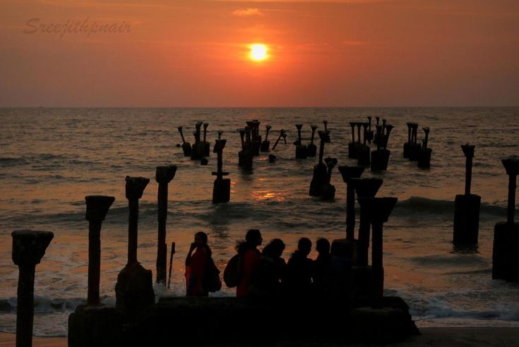
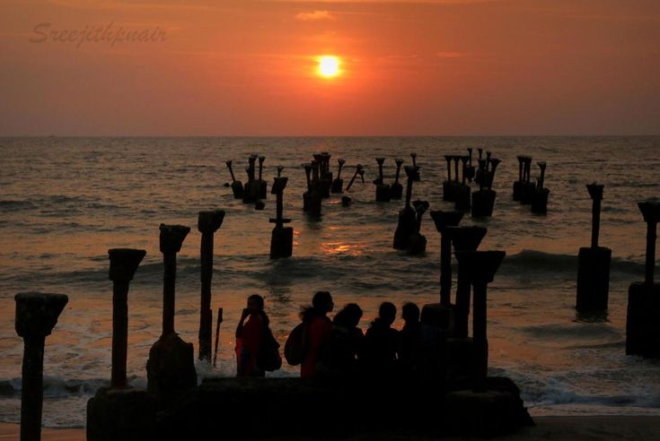

Indias most verdant state ,rated by National Geographic Traveller as one of the worlds 50 must-see destinations, is a paradisiacal landscape of palm-lined beaches, steamy jungles, plantation-covered hills, and tropical rivers and lakes. Visitors come here primarily to unwind and indulge; this is, after all, where succumbing to a therapeutic Ayurvedic massage is as mandatory as idling away an afternoon aboard a slowly drifting kettuvallam, or sipping coconut water under a tropical sun before taking in a wonderfully ritualized Kathakali dance. Eastward, the spice-scented Cardamom Hills and wild elephants of Periyar beckon, while a short flight west takes you to the little-known but sublime tropical reefs of the Lakshadweep islands. A thin strip on the southwest coastline, sandwiched between the Lakshadweep Sea and the forested Western Ghats that define its border with Tamil Nadu to the east, Kerala covers a mere 1.3% of the countrys total land area, yet its rich resources have long attracted visitors from across the oceans. It is in fact here that the first seafarers set foot on Indian soil. It is believed that Kerala has had trade links with Egypt,Rome, Arabia and China.
Contemporary Kerala was created in 1956 from the former princely states of Travancore, Kochi, and Malabar. Largely ruled by benevolent Maharajas who introduced social reforms emphasizing the provision of education and basic services, Kerala remains one of the most progressive, literate, and educated states in post-independence India. In 1957, it became the first place in the world to democratically elect a Communist government, and the first Indian state to successfully introduce a family-planning programme.

 
